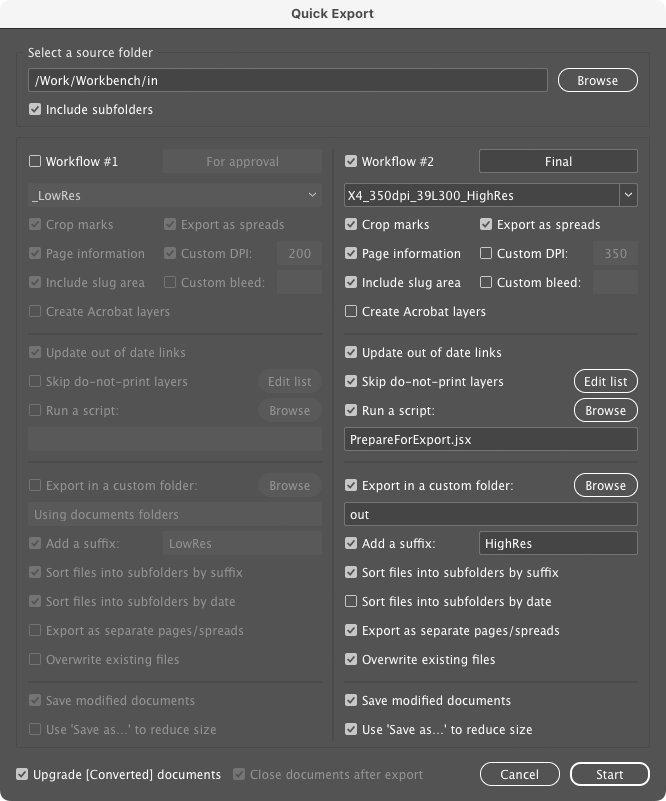

Indentz
This is a collection of InDesign scripts for various simple and repetitive tasks.
I often perform repeated, tedious, or time-consuming operations as a DTP operator, so I wrote several simple scripts to improve my workflow. Most are meant to be used with shortcuts[1] (suggestions for the Mac platform below). Some require one or more objects on the page to be selected. Apart from error alerts, they do their job silently; however, some[2] give a report if run with Ctrl.
The code was developed and tested in Adobe InDesign CC 2020–2023 on Mac (I mostly used InDesign ExtendScript API 8.0, compatibile with CS6). I’m a graphic designer, not a programmer, so be prepared for oversights and bugs (please create an issue if you encounter one, though!).
Usage
Cleanup
Defaults and cleanup.
DefaultPrefs.jsx
Sets some preferences for the active document. You should customize them to your workflow by editing the script.
Click here for details
Application:
Preferences ‣ General: Prevent Selection of Locked Objects
Preferences ‣ Display Performance: Preserve Object-Level Display Settings
Preferences ‣ File Handling: Always Save Preview Images with Documents
View ‣ Screen Mode: Normal
View ‣ Grids & Guides: Snap to Guides; Smart Guides
Windows ‣ Layers: Ungroup Remembers Layers; Paste Remembers Layers
Windows ‣ Objects & Layout ‣ Transform: Reference Point: Center; Adjust Stroke Weight when Scaling; Adjust Effects when Scaling
Windows ‣ Output ‣ Preflight: Off
Document:
Adjust Layout: Off
Document Intent: Print
Rulers: Zero Point: Reset
Preferences ‣ Type: Use Typographer’s Quotes; Apply Leading to Entire Paragraphs
Preferences ‣ Units & Increments ‣ Keyboard Increments: Cursor Key: 0.2 mm; Size/Leading: 0.5 pt; Baseline Shift: 0.1 pt; Kerning/Tracking: 5/1000 em
Preferences ‣ Units & Increments ‣ Ruler Units: Origin: Spread; Units: Millimeters
Preferences ‣ Units & Increments ‣ Other Units: Stroke: Points
Preferences ‣ Grids: Baseline Grid Color: R=230 G=230 B=230
Preferences ‣ Guides & Pasteboard: Preview Background Color: Light Gray
Edit ‣ Transparency Blend Space: Document CMYK
View: Show Rulers
View ‣ Extras: Show Frame Edges
View ‣ Grids & Guides: Show Guides; Unlock Guides; Snap to Guides
Windows ‣ Color: Fill: None; Stroke: None
Windows ‣ Effects: Blending Mode: Normal; Opacity: 100%
Windows ‣ Output ‣ Attributes: Nonprinting: Off
Windows ‣ Pages: Allow Document Pages to Shuffle
Windows ‣ Text Wrap: No text wrap
Windows ‣ Type & Tables ‣ Paragraph: Shading: Off
DefaultLayers.jsx
Adds a set of layers defined in a TSV data file named layers.tsv (sample) saved locally (meaning the active document folder or its parent), or as a global default (on the desktop, next to the script, or in Indentz root); local files and those starting with _ take precedence:
| Name | Color | Visible | Printable | Order | Variants |
|---|---|---|---|---|---|
| .visible area | Yellow | yes | yes | above | nicht sicht*, rahmen, sicht*, *vi?ib* |
| dielines | Magenta | yes | yes | above | cut*, decoupe, die, die*cut, stanz* |
| text | Green | copy, headline*, hl, text*, txt, typ? | |||
| artwork | Light Blue | no | yes | above | aw, design, element?, layout* |
| bg | Red | below | back, *background*, bgg, fond, hg, hintergrund* | ||
| .reference | Black | no | no | bottom | refer*, template, vorlage |
| … |
Name: Layer name
Color: Layer color (defaults toLight Blue; seeUIColors.txtfor color names)
Visible:yesorno(defaults toyes)
Printable:yesorno(defaults toyes)
Order:aboveorbelowexisting layers, ortop/bottom(defaults toabove)
Variants: A list of layers that will be merged with the base layer; it’s case insensitive and can take simple wildcards (?for exactly one character and*for zero or more characters)
Additional features:
A line may also contain a statement:
@includepathreference/path– defines a folder to which subsequent relative paths will refer;@includepath/to/other.tsv– includes another TSV file at this position;path/tomay be absolute or relative – by default is relative to the data file folder, but if you defined areference/path, it will be relative to that;@defaults– includes the global data file;
There’s also some non-standard stuff that will confuse Excel et al.:
- Blank lines are ignored;
- Everything after a
#is ignored (used for commenting); - The fields can be visually aligned with spaces that will be ignored at processing (I use VS Code and Rainbow CSV);
- A very long line can be broken into multiple lines with a backslash (
\) added at the end of each segment.
DefaultSwatches.jsx
Adds a set of swatches defined in a TSV data file named swatches.tsv (sample) saved locally (meaning the active document folder or its parent), or as a global default (on the desktop, next to the script, or in Indentz root); local files and those starting with _ take precedence:
| Name | Color Model | Color Space | Values | Variants |
|---|---|---|---|---|
| Rich Black | process | cmyk | 60 40 40 100 | |
| RGB Grey | process | rgb | 128 128 128 | |
| Cut | spot | cmyk | 0 100 0 0 | couper, die*cut |
| … |
Name: Swatch name
Color Model:processorspot(defaults toprocess)
Color Space:cmyk,rgborlab(defaults tocmyk)
Values: a list of numbers separated by space (), comma (,), pipe (|) or slash (/):
- 3 values in 0–255 range for RGB
- 4 values in 0–100 range for CMYK
- 3 values in 0–100 (L), –128–127 (A and B) range for Lab
Variants: a list of swatches that will be replaced by the base swatch; it’s case insensitive and can take simple wildcards (
?for exactly one character and*for zero or more characters)
You can use DumpSwatches.jsx to save a tab delimited list of swatches from the active document.
Additional features
A line may also contain a statement:
@includepathreference/path– defines a folder to which subsequent relative paths will refer;@includepath/to/other.tsv– includes another TSV file at this position;path/tomay be absolute or relative – by default is relative to the data file folder, but if you defined areference/path, it will be relative to that;@defaults– includes the global data file;
There’s also some non-standard stuff that will confuse Excel et al.:
- Blank lines are ignored;
- Everything after a
#is ignored (used for commenting); - The fields can be visually aligned with spaces that will be ignored at processing (I use VS Code and Rainbow CSV);
- A very long line can be broken into multiple lines with a backslash (
\) added at the end of each segment.
ReplaceFonts.jsx
Replaces document fonts using a TSV data file named fonts.tsv (sample) saved locally (meaning the active document folder or its parent), or as a global default (on the desktop, next to the script, or in Indentz root); local files and those starting with _ take precedence:
| Old font family | Style | New font family | Style |
|---|---|---|---|
| Arial | Regular | Helvetica Neue | Regular |
| Arial | Bold | Helvetica Neue | Bold |
| … |
You can use ShowFonts.jsx from Miscellaneous to get a tab delimited list of document fonts for copy-pasting.
Additional features
A line may also contain a statement:
@includepathreference/path– defines a folder to which subsequent relative paths will refer;@includepath/to/other.tsv– includes another TSV file at this position;path/tomay be absolute or relative – by default is relative to the data file folder, but if you defined areference/path, it will be relative to that;@defaults– includes the global data file;
There’s also some non-standard stuff that will confuse Excel et al.:
- Blank lines are ignored;
- Everything after a
#is ignored (used for commenting); - The fields can be visually aligned with spaces that will be ignored at processing (I use VS Code and Rainbow CSV);
- A very long line can be broken into multiple lines with a backslash (
\) added at the end of each segment.
ReplaceLinks.jsx ⌥F8
Replaces document links using a TSV data file named links.tsv (sample) saved locally (meaning the active document folder or its parent), or as a global default (on the desktop, next to the script, or in Indentz root); local files and those starting with _ take precedence:
| Relink to | Document links |
|---|---|
| /absolute/path/to/img1.psd | img1_lowres.jpg, img1-rgb.* |
| img2.psd | img2.* |
@includepath reference/path |
|
| img3.psd | |
| subfolder/img4.psd | |
| … |
Relink to (also see Additional features below):
- An absolute path of the form
/absolute/path/to/img1.psd;- A relative path which is:
- relative (by default) to the document
Linksfolder (img2.psd);- relative to
reference/pathdefined by a previous@includepathstatement (img3.psdandsubfolder/img4.psd).Document links:
- One or more document link names; it’s case insensitive and can take simple wildcards (
?for exactly one character and*for zero or more characters);- If empty, the name from the first column will be used (so that if it’s in the document, it will be replaced).
Quoting the paths is not required.
You can use DumpLinks.jsx to save a list of links from the active document.
Additional features
A line may also contain a statement:
@includepathreference/path– defines a folder to which subsequent relative paths will refer;@includepath/to/other.tsv– includes another TSV file at this position;path/tomay be absolute or relative – by default is relative to the data file folder, but if you defined areference/path, it will be relative to that;@defaults– includes the global data file;
There’s also some non-standard stuff that will confuse Excel et al.:
- Blank lines are ignored;
- Everything after a
#is ignored (used for commenting); - The fields can be visually aligned with spaces that will be ignored at processing (I use VS Code and Rainbow CSV);
- A very long line can be broken into multiple lines with a backslash (
\) added at the end of each segment.
ReplaceSnippets.jsx ⌥F6
Replaces a list of text snippets using a TSV data file named snippets.tsv (sample) saved locally (meaning the active document folder or its parent), or as a global default (on the desktop, next to the script, or in Indentz root); local files and those starting with _ take precedence:
| Find what | Change to | Case sensitive | Whole word | Scope |
|---|---|---|---|---|
| English instructions | Deutsche anleitung | yes | yes | |
| The sample is for free | Das Sample ist kostenlos | yes | yes | _DE$ |
| The sample is for free | L’échantillon est gratuit | yes | yes | _FR$ |
| 12.06.22 | 13.11.2022 | |||
| … |
Find what: Text to be replaced (you can use special characters)
Change to: The replacement text
Case sensitive:yesorno(defaults toyes)
Whole word:yesorno(defaults toyes)
Scope: Replacement will only be done if the document name matches the regular expression (case sensitive)
For example, ‘The sample is for free’ will be replaced with ‘Das Sample ist kostenlos’ in Document_DE.indd, and with ‘L’échantillon est gratuit’ in Document_FR.indd.
Additional features
A line may also contain a statement:
@includepathreference/path– defines a folder to which subsequent relative paths will refer;@includepath/to/other.tsv– includes another TSV file at this position;path/tomay be absolute or relative – by default is relative to the data file folder, but if you defined areference/path, it will be relative to that;@defaults– includes the global data file;
There’s also some non-standard stuff that will confuse Excel et al.:
- Blank lines are ignored;
- Everything after a
#is ignored (used for commenting); - The fields can be visually aligned with spaces that will be ignored at processing (I use VS Code and Rainbow CSV);
- A very long line can be broken into multiple lines with a backslash (
\) added at the end of each segment.
BreakLinkToStyles.jsx
Unnaplies paragraph/character/object styles from the selected objects or all objects in the document if nothing is selected.
DocCleanup.jsx F2
Performs a sequence of actions designed to bring the document to an approximately “clean” state:
- Sets some preferences (it runs
DefaultPrefs.jsx); - Unlocks all objects and resets their scaling to 100%;
- Deletes hidden objects (after confirmation);
- Deletes empty frames (after confirmation);
- Deletes unused swatches, layers and spreads;
- Converts empty text frames to generic frames;
- Converts empty frames to graphic frames;
- Resets default transparency effects;
- Resets visibility of some technical layers;
- Hides ‘invisible’ characters;
- Turns off URLs auto-updating;
- Sets the pasteboard margins.
RemoveScriptLabels.jsx
Sometimes objects that have a script label attached are reused, which may create problems later. The script deletes the labels of the selected objects or all objects in the document if nothing is selected.
SwatchesCleanup.jsx ⇧F2
Converts process RGB swatches to CMYK and renames them to ‘C= M= Y= K=’ format. It also deletes unused swatches and removes duplicates. Spot colors are not changed.
DumpLayers.jsx
Saves a TSV file (compatible with DefaultLayers.jsx) containing the names and properties of the active document layers.
DumpLinks.jsx
Saves a TSV file (compatible with ReplaceLinks.jsx) containing the links of the active document.
DumpSwatches.jsx
Saves a TSV file (compatible with DefaultSwatches.jsx) containing the names and properties of the active document swatches.
Layout
Document setup – page size, margins & columns, guides.
PageSizeFromFilename.jsx F3
Sets the size of the page, the margins, and marks the visible area[3], getting dimensions from the file name. It looks for pairs of numbers like 000x000 (where 000 means a group of at least one digit, followed or not by decimals, and optionally by mm or cm). If only one pair is found, it sets the size of the page. If two are found (e.g., 000x000_000x000), the larger pair sets the page size, the smaller pair the visible area. If a one- or two-digit sequence follows, it sets the bleed. Example:
| File name | Total size | Visible area | Bleed |
|---|---|---|---|
| Document1_315x55.indd | 315×55 | – | – |
| Document2_1400x400_700x137mm.indd | 1400×400 | 700×137 | – |
| Document3_597x517_577x500.5_3mm V4.indd | 597×517 | 577×500.5 | 3 |
PageSizeFromMargins.jsx
Resizes the current page to its margins.
PageSizeFromSelection.jsx ⇧F3
Resizes the page to the selected objects.
PageMarginsFromScriptName.jsx
Sets the page margins and optionally the HW area (expressed in percentage of the visible/page area), getting the values from the script name. It’s designed to be duplicated and renamed to customize the values, using one or two numbers and the keyword HW – e.g., MG5HW10.jsx sets a value of 5% for the margins and 10% for the HW (HW can also be used alone, which sets it to 10%, or omitted, which sets it to 0).
PageMarginsFromSelection.jsx ⌥F3
Sets the page margins from the selected objects.
GuidesAdd.jsx
If any page objects are selected, it adds guides around them. If nothing is selected, it adds guids on page edges and in the middle of margins; a second run deletes them.
GuidesDelete.jsx
Deletes all guides from the document.
Align
Align page objects with ease using the numeric keypad.
AlignTo*.jsx
Use the numeric keypad to instantly align the selected object to the Align To selection (see below), with a single keystroke.
Shortcuts
| Left | Key | Center | Key | Right | Key |
|---|---|---|---|---|---|
| AlignToTL.jsx | Num7 | AlignToT.jsx | Num8 | AlignToTR.jsx | Num9 |
| AlignToL.jsx | Num4 | AlignToC.jsx | Num5 | AlignToR.jsx | Num6 |
| AlignToBL.jsx | Num1 | AlignToB.jsx | Num2 | AlignToBR.jsx | Num3 |
ToggleAlignTo.jsx Num0
Toggles Align To between selection, margins, page or spread (just run it repeatedly):

ResetAlignTo.jsx ⌃Num0
Resets Align To to default (Align to Selection).
Fit
Reframe selected objects.
FitTo*.jsx
These scripts reframe the selected objects to the target area specified in the script name (page/spread or their margins, bleed or visible area[3:1]).
For example, running FitToPageBleed.jsx (⇧F11) on these two frames will expand the yellow one and shrink the red frame to the page bleed:

The refitting is done by:
-
Shrinking the edges that hang outside the target area;
-
Extending the edges that touch or are very close to a trigger zone (which is either the target or the visible area). By default this snap zone is 1% of the visible area[4].
Note: Rectangular frames and straight lines are simply reframed; rotated objects, ovals, groups etc., are first inserted into a clipping frame. Only clipped objects, straight frames and lines are extended. Frames with an embedded object are only extended to the limits of that object.
The *Forced.jsx variants simply reframe the objects to the target area.
Shortcuts
| Page | Key | Spread | Key |
|---|---|---|---|
| FitToPage.jsx | F11 | FitToSpread.jsx | F12 |
| FitToPageMargins.jsx | ⌥F11 | FitToSpreadMargins.jsx | ⌥F12 |
| FitToPageVisibleArea.jsx | ⌥⇧F11 | FitToSpreadVisibleArea.jsx | ⌥⇧F12 |
| FitToPageBleed.jsx | ⇧F11 | FitToSpreadBleed.jsx | ⇧F12 |
| FitToPageForced.jsx | ⌘F11 | FitToSpreadForced.jsx | ⌘F12 |
| FitToPageMarginsForced.jsx | ⌥⌘F11 | FitToSpreadMarginsForced.jsx | ⌥⌘F12 |
| FitToPageVisibleAreaForced.jsx | ⌥⇧⌘F11 | FitToSpreadVisibleAreaForced.jsx | ⌥⇧⌘F12 |
| FitToPageBleedForced.jsx | ⇧⌘F11 | FitToSpreadBleedForced.jsx | ⇧⌘F12 |
Note: F11 page, F12 spread; ⌥ margins, ⌥⇧ visible area, ⇧ bleed; ⌘ forced.
TextAutosize.jsx F6
Auto-sizes the selected text frames to their content.
It’s designed to be run repeatedly. Each run increases the level with one step (from None to Height Only, and from Height Only to Height and Width), except single lines, which are always set Height and Width. The reference point is set by the first paragraph’s alignment and the text frame’s vertical justification:
| Paragraph Alignment → ↓ Vertical Justification |
 |
 |
 |
|---|---|---|---|
 |
 |
 |
 |
 |
 |
 |
 |
 |
 |
 |
 |
Note: A second run will preserve the current auto-sizing if only the alignment is changed.
Scale
Resize selected objects.
ScaleTo*.jsx
Scale the selected objects to the page size, page margins, or spread bleed. All objects are scaled together, as a group.
*H.jsx and *W.jsx variants scale to the height or width of their target.
Shortcuts
| Page | Key | Page margins | Key | Spread bleed | Key |
|---|---|---|---|---|---|
| ScaleToPageSize.jsx | F5 | ScaleToPageMargins.jsx | ⌥F5 | ScaleToSpreadBleed.jsx | ⇧F5 |
| ScaleToPageSizeH.jsx | ⌃F5 | ScaleToPageMarginsH.jsx | ⌃⌥F5 | ScaleToSpreadBleedH.jsx | ⌃⇧F5 |
Proxy
SetRefPoint*.jsx
Use the numeric keypad to set the reference point used for transformations (similar to clicking the little proxy squares in the Control palette):

Shortcuts
| Left | Key | Center | Key | Right | Key |
|---|---|---|---|---|---|
| SetRefPointTL.jsx | ⌃Num7 | SetRefPointT.jsx | ⌃Num8 | SetRefPointTR.jsx | ⌃Num9 |
| SetRefPointL.jsx | ⌃Num4 | SetRefPointC.jsx | ⌃Num5 | SetRefPointR.jsx | ⌃Num6 |
| SetRefPointBL.jsx | ⌃Num1 | SetRefPointB.jsx | ⌃Num2 | SetRefPointBR.jsx | ⌃Num3 |
File
FilesToSpreads.jsx
Combines the open documents, sorted alphabetically.
SpreadsToFiles.jsx
Saves each spread of the active document to a separate file.
If the file name ends with a separator (space/dot/underline/hyphen) followed by a sequence of digits or letters equal to the number of spreads, each saved spread will have the letter corresponding to its index appended to its name – e.g., a document with three spreads named Document_ABC.indd will be split into Document_A.indd / Document_B.indd / Document_C.indd. If not autodetected, the script will prompt the user for a sequence.
By default the index will be appended at the end, but you can put a # in the file name to place the index at that particular position.
LayersToSpreads.jsx
Moves all layers of the active document to separate spreads (the document must have a single spread).
You may use SpreadsToFiles.jsx to split the result into separate documents.
Export
QuickExport.jsx ⌃E
My workflow requires frequent changes to export settings; the native export dialog has quite a few tabs and options, so I used to have a lot of Adobe PDF Presets with just a few differences. For many years I used Peter Kahrel’s wonderful Batch Convert, but I’ve always wanted a tool tailored to my needs. I made this script to have the frequently changed settings easily accessible and thus reduce the number of presets to the essential; I also added some other features that make my life easier.
There are two selectable workflows, with the options grouped into several categories. I will review the not self-explanatory ones:

![]()
Source folder:
- By default all open documents will be exported. If nothing is open, you can select a folder as the source.
Preset options:
- After selecting an Adobe PDF Preset you can override some of its options with just a few clicks: crop marks, page information, to include or not the slug area, to export as pages or as spreads, resolution, bleed etc.
Document actions:
-
Skip do-not-print layers will not export layers with names beginning with a dot or a hyphen (e.g., .safety area); you can also define a custom list with Edit list.
-
Run a script will run a JavaScript or AppleScript before exporting (e.g., one of the other scripts from this section).
Output options:
-
Export in a custom folder: By default the files are exported in the same folder as the source document, but you can choose a custom one.
-
Add a suffix: This text will be appended to the name of the exported files. Note: A preset can be ‘paired’ with a suffix by adding it to its name after the last underscore: e.g., when you select
X4_350dpi_39L300_print, the suffix will be automatically changed toprint. -
Sort files into subfolders by suffix: Files will be exported in a subfolder named after the suffix, up to the first
+character: e.g., forprintthe PDF will be exported asprint/Document_print.pdf; forprint+diecut, asprint/Document_print+diecut.pdf. -
Sort files into subfolders by date: Files will be exported in a subfolder named
MM.DD(current month/day). -
Overwrite existing files: If unchecked, the files will get unique names by incrementing their index – for example, we’ll export as
Document_preview3.pdfif there is already aDocument_preview2.pdfin the export folder or its subfolders. If checked, the index will not be incremented and the files will be overwritten if the destination is the same.
Updating source:
-
After export, modified documents can be updated or not (e.g., you want to preserve changes made by a script).
-
You can also enforce a Save as for all documents. This is useful for reducing the size of documents that have been modified many times (on each regular save the document grows with the latest changes).
Global options:
- Upgrade [Converted] documents: Upgrade documents from previous versions of InDesign, or skip them.
Note: If you keep the Opt/Alt key pressed while clicking Start, the script will run without saving the settings.
MarkVisibleArea.jsx
Creates a frame the size of the page margins that marks the visible area[3:2]. It will use an existing Visible area swatch, or will create one with the values R=255 G=180 B=0.
PrepareForExport.jsx
Hides some do-not-print layers: covered area, visible area, safety area, segmentation, and all layers starting with either a dot or a hyphen (for the full list see the script).
Moves all page objects from varnish, uv, foil, silver and white to separate spreads and labels them.
ShowDNPLayers.jsx / HideDNPLayers.jsx
Show or hide some do-not-print layers: covered area, visible area, safety area, segmentation, and all layers starting with either a dot or a hyphen (for the full list see the script).
View
TileAll.jsx ⇧F4
Invokes Window ‣ Arrange ‣ Tile All Vertically, Tile All Horizontally, or Tile, depending on the current spread orientation.
ZoomTo300Percent.jsx ⌘3
Zooms current layout window to 300%.
ZoomToSelection.jsx F4
It resembles Fit Selection in Window (⌥⌘=), but with some changes:
- Brings the selection a little closer;
- If the cursor is in a text frame, zooms on the whole frame;
- Without anything selected zooms on the current spread.
ZoomToSpreads.jsx ⌥F4
Zooms on the first 3 spreads.
Miscellaneous
Clip.jsx Num*
To handle some objects, it may be useful to temporarily insert them into a container (clipping frame). The script inserts the selected objects into a clipping frame or restores them if they are already clipped.
Note: It uses the clipboard, so make sure you don’t lose anything important.
ClipUndo.jsx ⌃Num*
Releases one or several objects from their clipping frames (you can select any objects, it will only release the clipped ones). If nothing is selected, it will release all clipped objects.
EAN.jsx ⌥F9
This script is inspired by EAN Barcode Generator by Konstantin Smorodsky, modified to embed a code in the selected rectangle: if we have a page object (ideally a rectangle) selected, the script embeds an EAN code in it, scaled to width. If nothing is selected, creates a new document.
Enter 8 or 13 digits for the code itself; if you have an add-on, add a hyphen and another 2 or 5 digits.
LabelPage.jsx
Adds a custom label on the current page slug, on the info layer (Helvetica Regular 6 pt, fill Registration, stroke Paper 0.4 pt):

LabelPageRatios.jsx
Adds a label with the visible area[3:3] ratio and page margins ratio on the slug of each page.
Note: If the visible area is not defined, it defaults to the page size.
OffsetPaths.jsx
This is a slightly modified version of OffsetPath by Olav Martin Kvern, which uses a clever method to create paths around selected objects at a custom offset distance:
When you apply a Contour-type text wrap to an object, you’re creating a path around that object—and you can specify an offset distance. The text wrap path is accessible via scripting. That means that we could apply a text wrap with a given offset, then capture the path and path points of that path, turn off text wrap, and then create a new path from those geometric coordinates.
I fixed some bugs and added a default value, an option to join contours, and support for undoing.
QR.jsx F9
Adds a QR code on each spread of the active document (outside visible area[3:4], if possible) or to separate PDF files:
| On document | On file |
|---|---|
 |
If the document name ends with a separator (space/dot/underline/hyphen) followed by a sequence of digits or letters equal to the number of spreads, the letter corresponding to the spread index will be appended to each code/file – e.g., for a document with three spreads named Document_ABC.indd, the script will generate Document_A_QR.pdf, Document_B_QR.pdf and Document_C_QR.pdf.
You can use | for manually splitting the label into several lines.
QRBatch.jsx ⇧F9
Does the same thing as QR but in a non-interactive way: retrieves a list of codes from a TSV data file named qr.tsv (sample) and adds them to existing documents or creates separate files (the suffix thing applies here as well):
| File name | Code | On doc |
|---|---|---|
| Document 1 | Code 1 | + |
| Document 2_ABC | Code 2 | + |
| Document 3_AC | Code 3 | |
| … |
File name: document name
Code: any string
On doc: any string: on existing document; empty or missing: on separate file
The TSV file must be saved locally (in the active document folder); files starting with _ take precedence.
Blank lines are ignored; everything after a # (comments) is ignored.
You can use | for manually splitting the label into several lines.
ShowFonts.jsx
Shows all fonts used in the active document.
ShowProfiles.jsx
Shows all color profiles available to InDesign.
ShowProperties.jsx F1
Shows properties and methods of a selected object (for debugging purposes).
Install
- Clone or download from Code ‣ Download ZIP, or download the latest release.
Note: The scripts from the repository recycle many bits of code, using dynamically linked libraries fromlib/, meaning that the folder structure should to be preserved if downloading the scripts in this way. If you prefer stand-alone scripts or just pick some as needed, download the latest release, where they are statically linked[5]. - Open Window ‣ Utilities ‣ Scripts.
- Right-click on folder User and select Reveal in Finder/Explorer.
- Copy Indentz to this folder.
About
All scripts are created by me unless otherwise noted.
© 2020-2023 Paul Chiorean <jpeg AT basement.ro>.
The code is released under the MIT License (see LICENSE.txt).
The code in this project would not have been possible without the InDesign ExtendScript API by Theunis de Jong and Gregor Fellenz, Mozilla’s MDN Web Docs, and also blog posts, forum posts, tutorials or code by Marc Autret, Dave Saunders, Peter Kahrel, Gregor Fellenz, Marijan Tompa, Richard Harrington and many others.
Thanks to Adrian Frigioiu for bug reports and feedback.
Last updated: August 5, 2023
You can add shortcuts to scripts from Edit ‣ Keyboard Shortcuts ‣ Product Area ‣ Scripts. ↩︎
DefaultLayers.jsx,DefaultSwatches.jsx,ReplaceFonts.jsx,ReplaceLinks.jsx,ReplaceSnippet.jsx. ↩︎A visible area is a custom zone delimited by a frame named
<visible area>, and it’s used to mark the visible part of a poster, etc.; some scripts take it into account. When undefined, it fallbacks to the page/spread size. ↩︎ ↩︎ ↩︎ ↩︎ ↩︎The value is configurable by editing the constant
SNAP_PCTfromfitTo(). ↩︎Releases may be old, however. The latest version is in the dev branch – this is what I actually use every day, so it’s kind of tested, but… beware. 😉 ↩︎